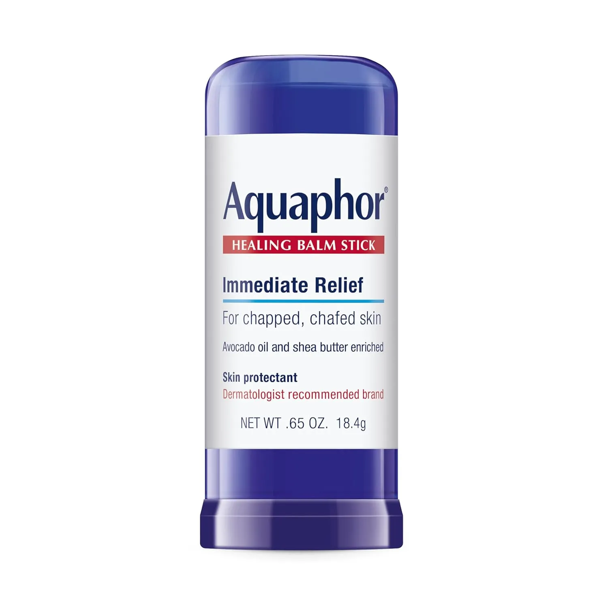
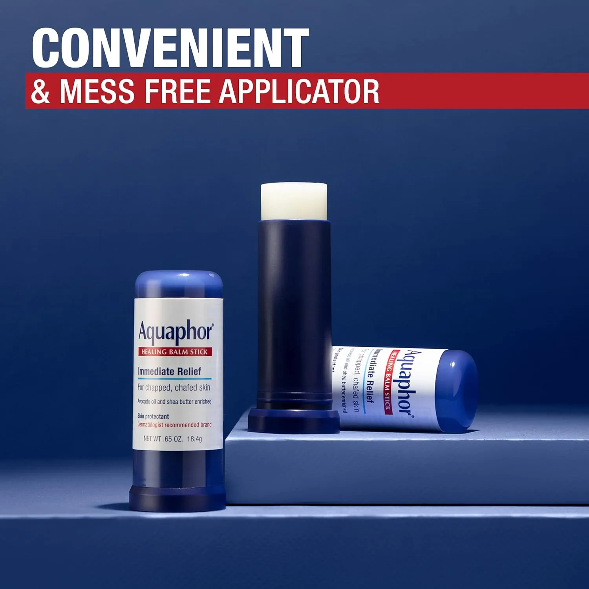
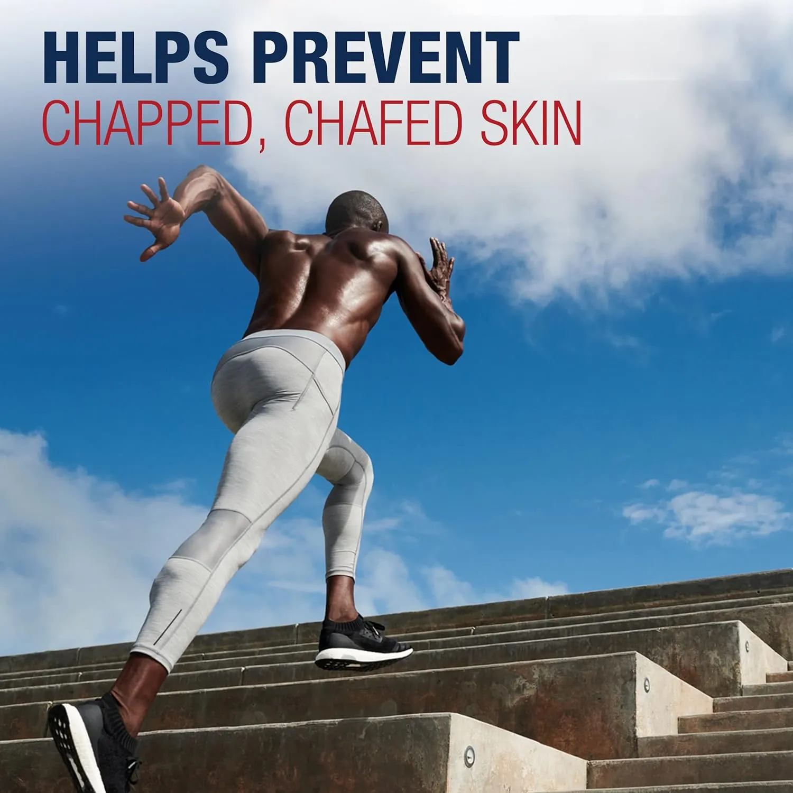
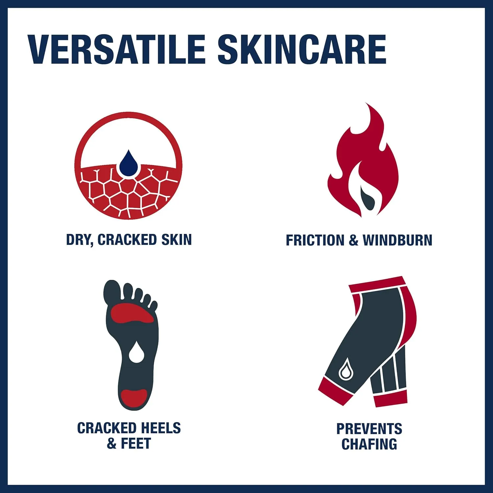
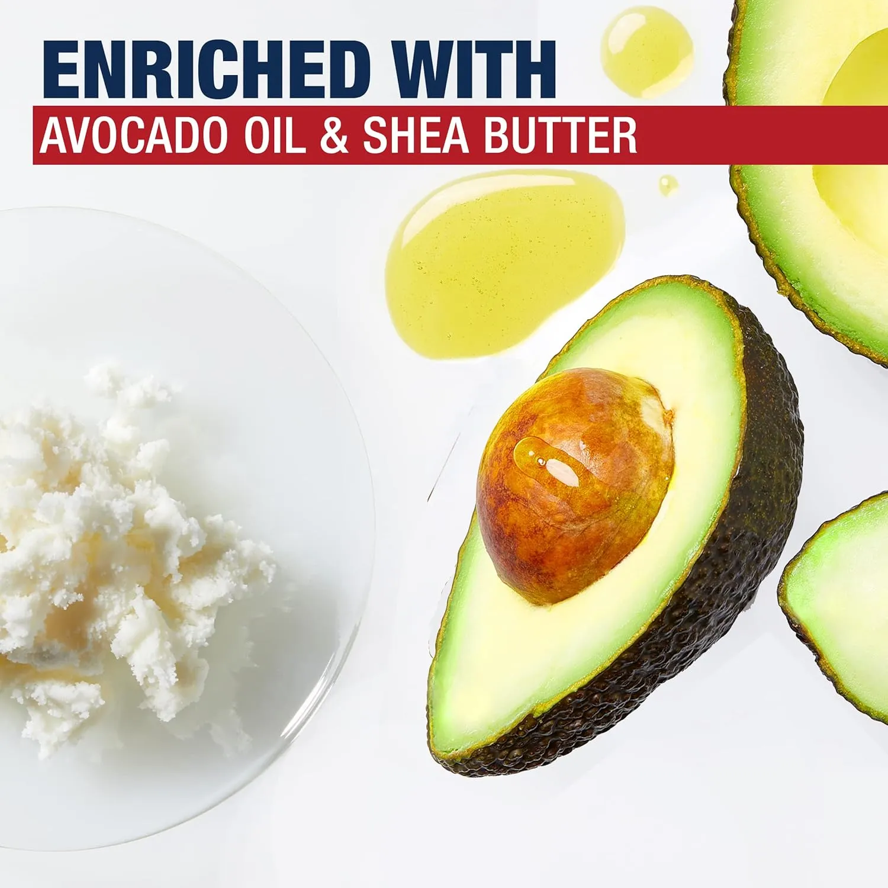
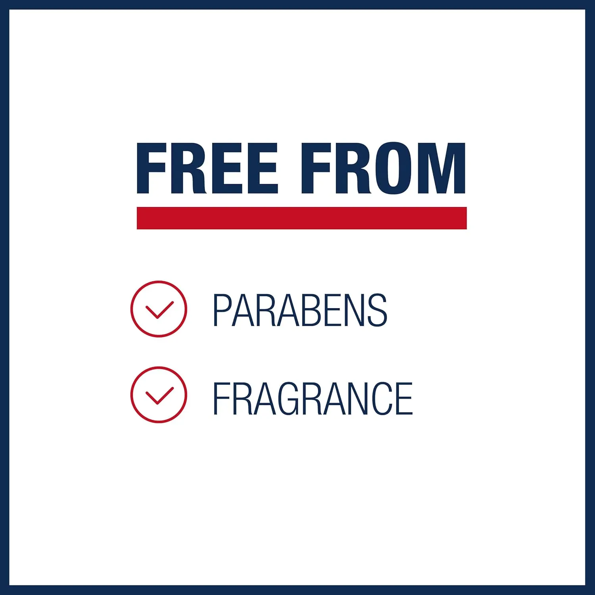
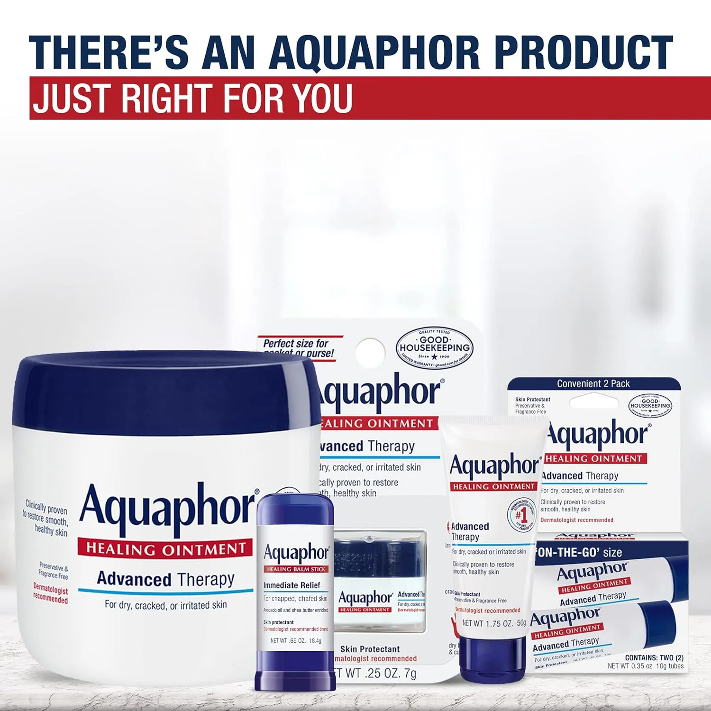
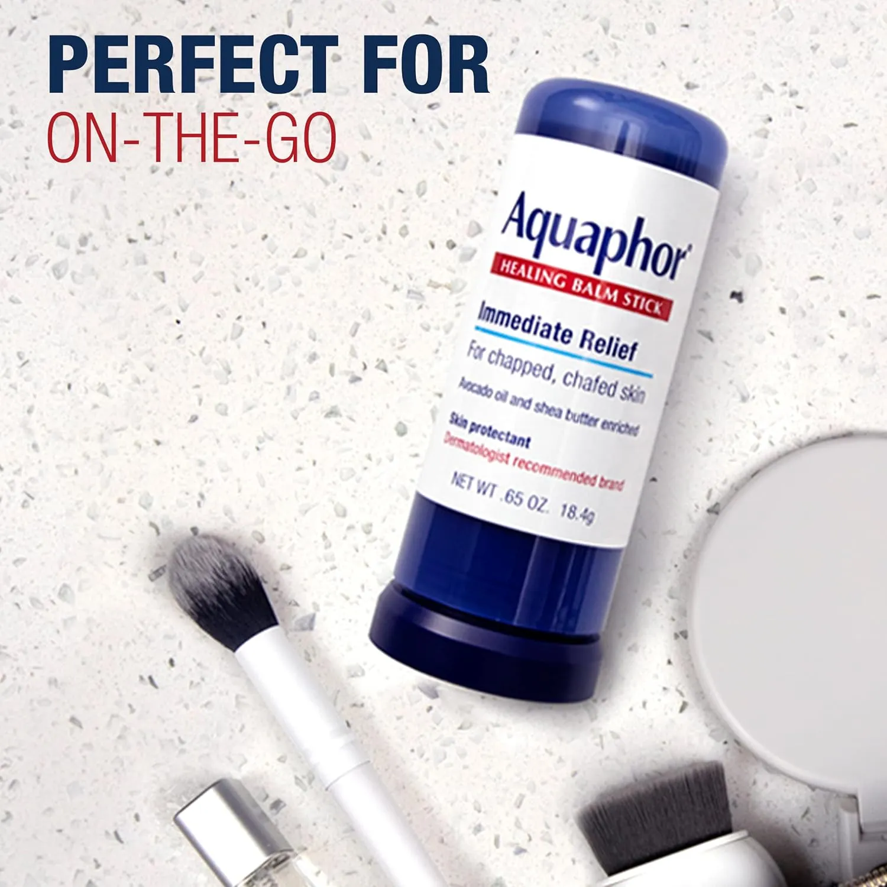

It solves the “I left it at home” problem
The stick format is easier to keep nearby than a tub or tube, so it works better as a daily backup.
Aquaphor Healing Balm Stick is the pocket-friendly version of a skincare staple: a glide-on balm for small dry spots, chapped areas, cracked skin, and friction-prone moments.
This is an editorial affiliate page. The product is sold on Amazon, not directly by The Merchant. Always check the live Amazon listing and product label for current details, usage directions, ingredients, price, and availability.

A big jar can be useful in the bathroom. The problem is real life: dry lips, rough knuckles, cracked-feeling spots, friction areas, and wind-exposed skin usually show up when you are already out.

The stick format is easier to keep nearby than a tub or tube, so it works better as a daily backup.
Use it where you need coverage: lips, knuckles, heels, elbows, rubbed areas, and dry patches.
No scooping, no jar lid, and no messy fingers when you need a quick touch-up outside the house.
The biggest conversion angle is not complicated: it removes the friction from using balm when you actually need it.

Apply as directed without digging product out with your fingers.
Keep one in a purse, office drawer, gym bag, travel pouch, diaper bag, or car console.
Apply to friction-prone spots before walking, workouts, travel days, or cold-weather exposure.
The stick format is most useful when you are trying to handle small areas quickly, not replace a full skincare routine.

Good for targeted areas that need a heavier balm feel than regular lotion.
Useful before clothing, walking, workouts, or repeated rubbing bother the same spots.
Keep it for the small areas that always seem to get dry first.
This section keeps the selling angle strong without using review scores, star ratings, or Amazon-review language.
Small enough to keep close so dry-skin care is not limited to your bathroom cabinet.
Useful when hands, lips, or dry spots need help during work hours.
A practical option for rubbed areas before walking, training, or active days.
Cold air, hotel soap, flights, and walking days can all make dry skin more noticeable.
Better for small spots than trying to carry a large jar everywhere.
Simple, practical, and useful for almost anyone who deals with dry skin moments.
The listing imagery highlights avocado oil and shea butter enrichment, while the stick format makes application cleaner and easier to control.

A familiar skincare ingredient shown in the product imagery for a more nourishing balm story.
Adds to the comfort-focused positioning for dry and chapped-feeling skin.
The imagery also presents the product as free from fragrance and parabens. Check the current label before buying.
This is a strong buyer reassurance point for people who want a simple skin protectant stick without added fragrance. Always verify the latest product label before use.

The product image highlights a paraben-free message, which can matter to shoppers comparing everyday skin protectants.
Useful for people who prefer no added scent in products used around lips, hands, heels, elbows, or friction-prone areas.
Ingredients and packaging can change, so confirm the latest Amazon listing and product label before ordering or using.
Use it as a targeted skin protectant stick where small dry or rubbed areas need attention.

That is the point. It works best when you want portable, targeted coverage for small areas instead of carrying a larger skincare product.

Best for people who want something they can keep in multiple places and actually use during the day.
This is not a lightweight lotion. It is better for small, targeted areas where a richer balm feel makes sense.
For persistent, severe, bleeding, infected, or unusual skin irritation, check with a qualified healthcare professional.
Product details, ingredients, directions, size, and packaging can change. Always verify the live Amazon listing and the product label before use.
Simple shopping guidance before clicking through.
The balm stick can be useful for multiple small areas such as lips, hands, heels, elbows, dry spots, and friction-prone zones. Follow the current label directions.
It depends on the use. The jar makes sense for home and larger areas. The stick makes more sense for targeted, portable, mess-free application.
Yes, that is one of the strongest reasons to choose the stick format. It is easier to keep in a purse, backpack, desk, gym bag, travel kit, or nightstand.
Check the live Amazon listing for current size, ingredients, usage directions, packaging, price, availability, and return policy.
View the live Amazon listing for current price, label details, size, packaging, ingredients, and availability before ordering.
